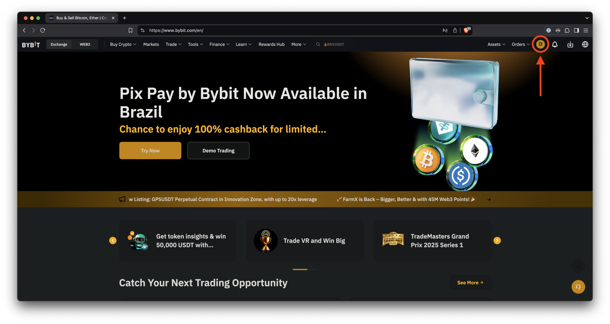
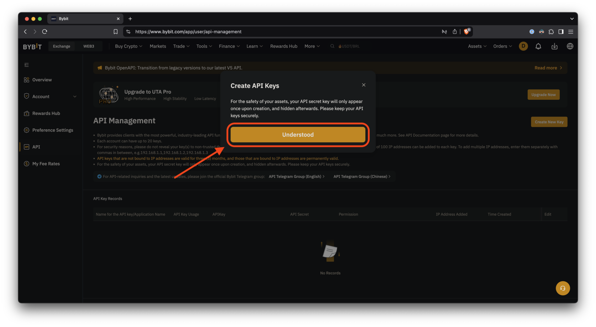
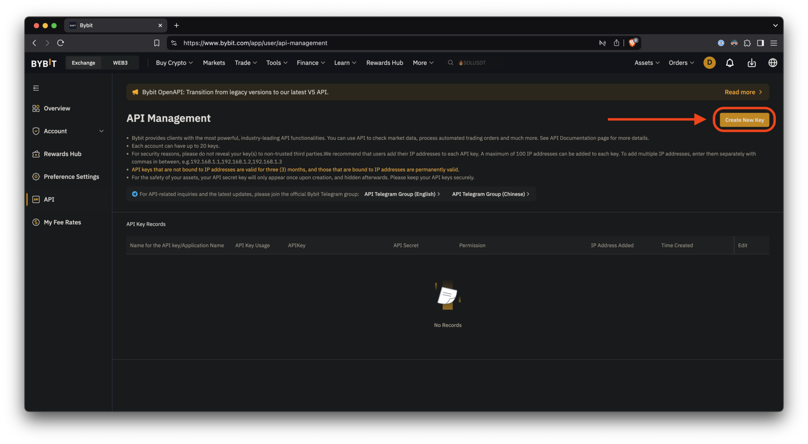
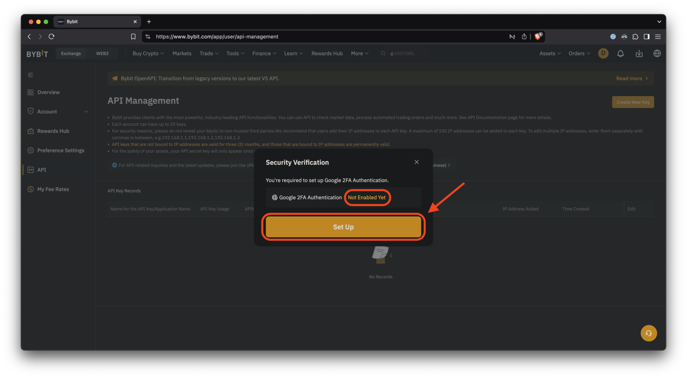
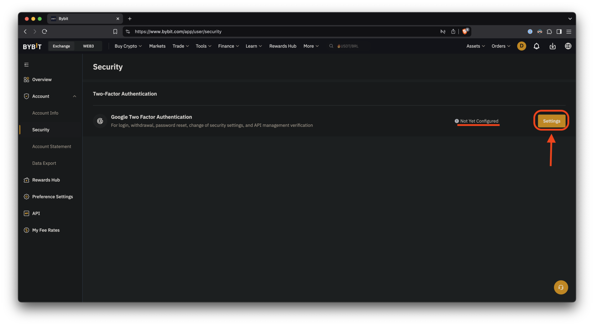
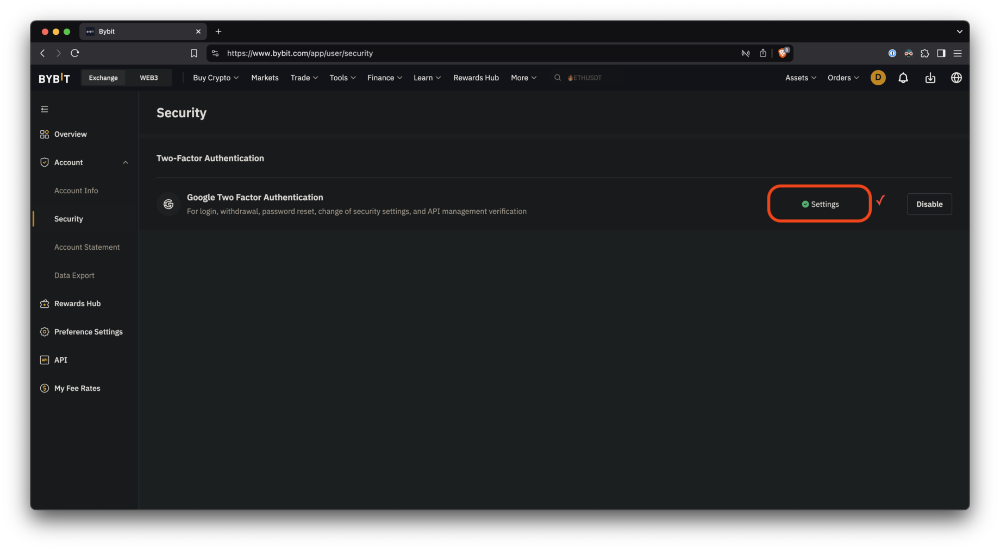
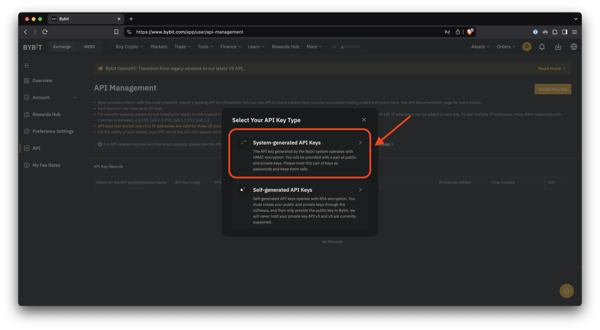
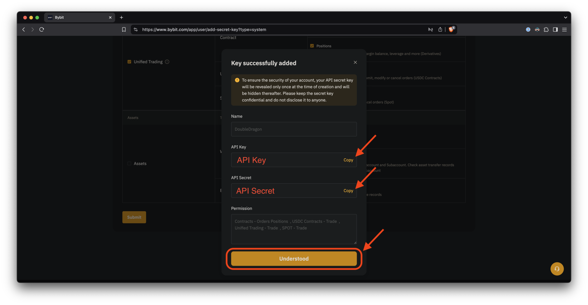
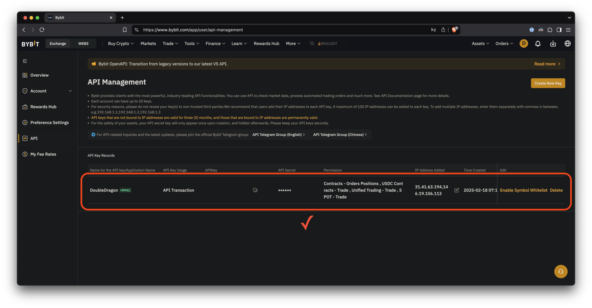

Generating API Keys
Генерация ключей API
Step 1
Шаг 1
Click the profile image to display the account menu.
Нажмите на изображение профиля, чтобы отобразить меню учетной записи.
Ensure you are logged into the newly created sub-account.
Убедитесь, что вы вошли в только что созданный субаккаунт.
Step 2
Шаг 2
Click the "API" link to open the API key creation page.
Выберите ссылку «API», чтобы открыть страницу создания ключа API.

Step 3
Шаг 3
Read the warning and click "Understood."
Прочитайте предупреждение и нажмите «Понятно».
Step 4
Шаг 4
Click "Create New Key."
Нажмите «Создать новый ключ».
Step 5
Шаг 5
If you have not set up 2FA, Bybit will prompt you to do so before proceeding.
Если вы не настроили 2FA, Bybit попросит вас сделать это, прежде чем продолжить.
It will appear as "Not Enabled Yet" in the warning.
В предупреждении будет написано «Еще не включено».
Click "Set up" to go to the security page and configure it.
Нажмите «Настроить», чтобы перейти на страницу безопасности и настроить её.
Step 6
Шаг 6
Click "Settings" to configure 2FA.
Нажмите «Настройки», чтобы настроить 2FA.
This guide does not cover the 2FA setup process.
В этом руководстве настройка 2FA не рассматривается.
Step 7
Шаг 7
If you see a green checkmark, you're all set.
Если вы видите зеленую галочку, настройка завершена.
Step 8
Шаг 8
Now, return to the API creation page from Step 4 and click "Create New Key."
Теперь вернитесь на страницу создания API из шага 4 и нажмите «Создать новый ключ».
Step 9
Шаг 9
Choose the first option, "System-generated API keys."
Выберите первый вариант, «Генерируемые системой ключи API».
Step 10
Шаг 10
-
First, select "API Transaction."
Сначала выберите опцию «API транзакция».
-
Then, enter a name (e.g. "PassivBot") to indicate where the key is used.
Затем введите имя, например «PassivBot», чтобы обозначить, где используется ключ.
-
Next, select "Read-Write" to enable the bot to open and close positions properly.
Далее выберите опцию «Чтение-запись», чтобы бот мог правильно открывать и закрывать позиции.
-
Then, choose "Only IPs with granted permissions are allowed to access the OpenAPI."
Затем выберите опцию «Доступ к OpenAPI разрешён только IP-адресам с предоставленными правами».
-
Finally, enter the following IP addresses without spaces between them:
Наконец, введите следующие IP-адреса без пробелов между ними:
31.41.63.194,146.19.106.113
Step 11
Шаг 11
Check the "Unified Trading" box, then click "Submit."
Поставьте галочку «Унифицированная торговля», затем нажмите «Отправить».

Step 12
Шаг 12
Now, copy both the API Key and API Secret and store them safely. You will need them shortly.
Теперь скопируйте как API Key, так и API Secret и сохраните их в надёжном месте – они скоро понадобятся.
Step 13
Шаг 13
If you see a message like this, your API key was created successfully!
Если вы видите подобное сообщение, ваш API-ключ был успешно создан!
